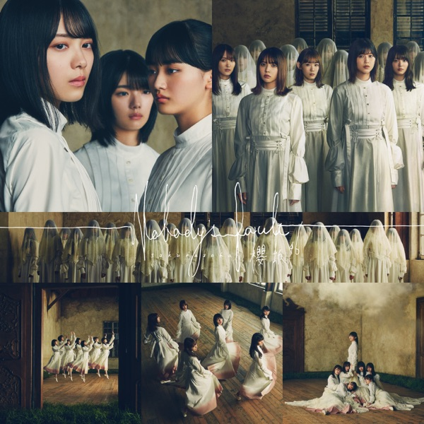

サカミチ
サカミチNobody's faultのーばでぃーずふぉると

初収録リリース「Nobody's fault」のジャケット
櫻坂46
発売日：2020-12-09
収録：Nobody's fault（1stSG）
種別：表題曲
センター：森田ひかる
作曲：デレク・ターナー
編曲：野中“まさ”雄一
ライブ披露：94件
フォーメーション
上が後列、下が前列です。色付きがセンター。（公式発表に基づく）
 武元唯衣
武元唯衣 大園玲
大園玲 守屋茜
守屋茜 松田里奈
松田里奈 尾関梨香
尾関梨香 土生瑞穂
土生瑞穂 菅井友香
菅井友香 藤吉夏鈴
藤吉夏鈴 小池美波
小池美波 山﨑天
山﨑天 田村保乃
田村保乃 小林由依
小林由依 森田ひかる
森田ひかる 渡邉理佐
渡邉理佐参加メンバー（14名）
尾関梨香、小池美波、小林由依、菅井友香、土生瑞穂、守屋茜、渡邉理佐、大園玲、武元唯衣、田村保乃、藤吉夏鈴、松田里奈、森田ひかる、山﨑天
この曲が披露されたライブ（94件）
新しい順に20件まで表示しています（全94件）。
同じリリースの曲
Nobody's fault、なぜ 恋をして来なかったんだろう？、半信半疑、Plastic regret、最終の地下鉄に乗って、Buddies、ブルームーンキス